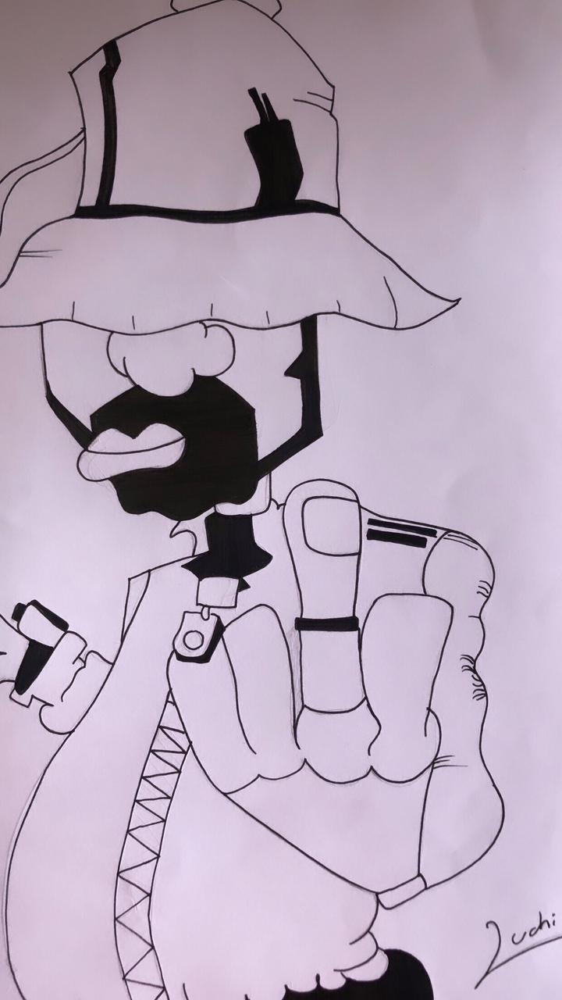
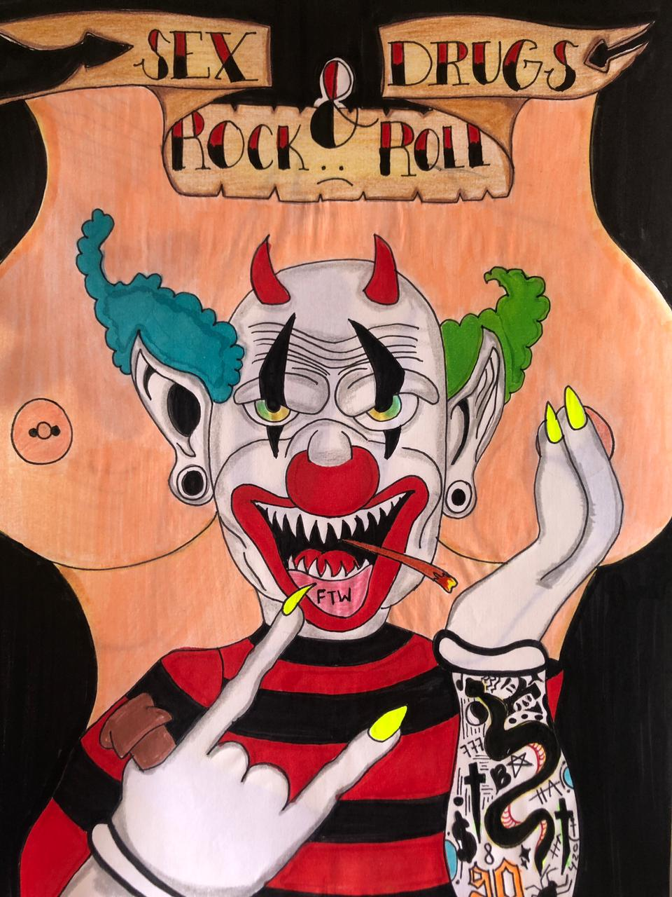
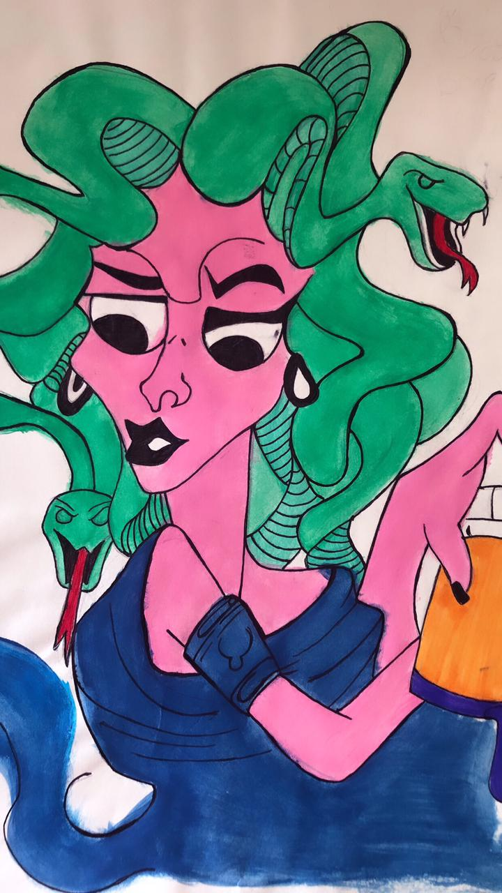
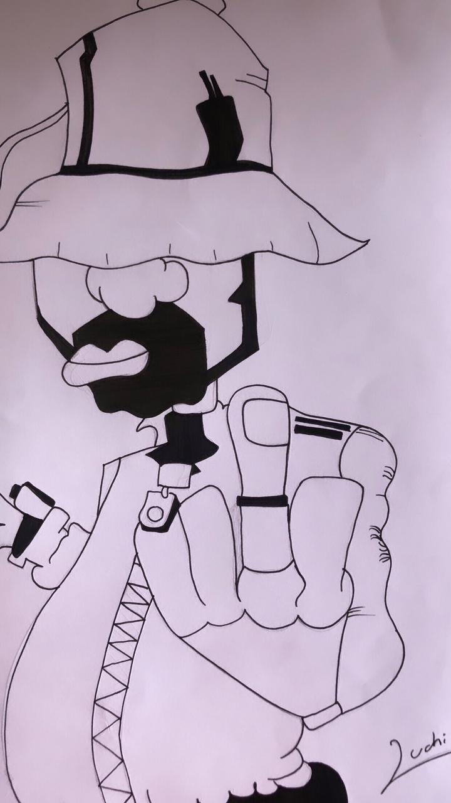
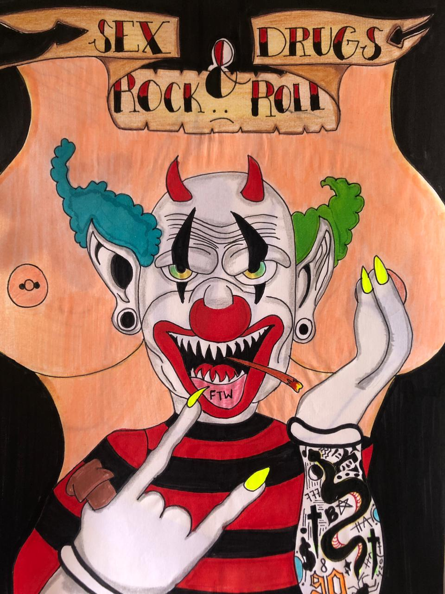
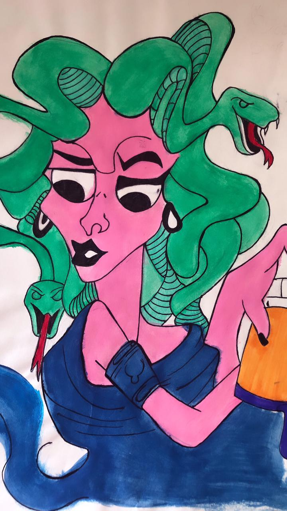
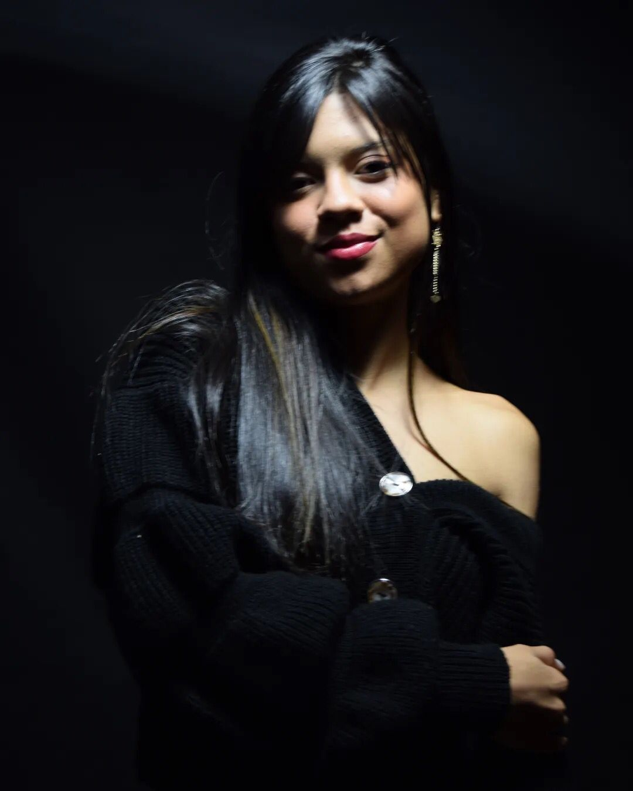
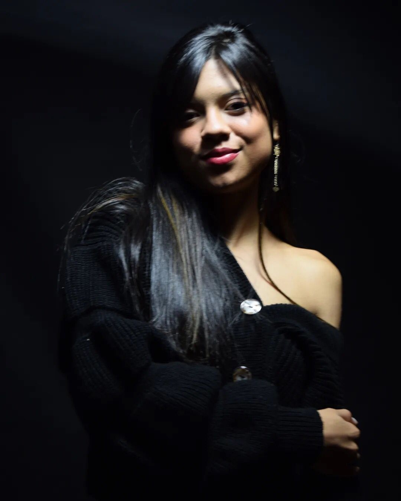

Sueño en pintar y luego pinto mi sueño. Vincent Van Gogh
“Simplemente no soy de este mundo... Yo habito con frenesí la luna. No tengo miedo de morir; tengo miedo de esta tierra ajena, agresiva... No puedo pensar en cosas concretas; no me interesan. Yo no sé hablar como todos. Mis palabras son extrañas y vienen de lejos, de donde no es, de los encuentros con nadie... ¿Qué haré cuando me sumerja en mis fantásticos sueños y no pueda ascender? Porque alguna vez va a tener que suceder. Me iré y no sabré volver. Es más, nos sabré siquiera que hay un "saber volver". No lo querré acaso.” ― Alejandra Pizarnik
EmpiezaArteObras
El dibujo de Spiderman fue uno de los primeros dibujos que realice cuando estaba aprendiendo a dibujar, utilice marcador negro para delinear y lo demas fue con colores. El segundo, es el primer dibujo que realice con boligrafo negro. El tercero fue un dibujo elaborado como un afiche al rock and roll, para delinearlo utilice micropuntas lo pinte con marcadores y colores. El cuarto fue el primer dibujo elaborado con pintura basado en Medusa.
Empieza 





ArteObras
Estos son algunos dibujos que hice con la tecnica del arte pop. para Charlie Chaplin utilice 10 colores (Verde, amarillo, amarillo fundido, morado, naranja, azul claro, azul oscuro, un naranja ladrillo, negro y blanco) para Cristiano Ronaldo utilice colores frios y calidos para que se tomara la textura de su rostro y un fondo negro para que los colores le dieran vida al dibujo para el pato Lucas utilice 6 colores (Rojo, naranja, amarillo. rosado, negro y blanco)
ArteObras
Mi nombre es Ivana Lucia Bonilla Barrera, tengo 18 años me gusta leer, bailar, escribir pero me gusta mucho mas dibujar. Aprendi a dibujar en pandemia, fue un proceso muy bonito, me disfrute cada dibujo que realice, me gustaria seguir aprendiendo y llegar a realizar retratos. Me gusta dibujar más con lapiz pero tambien es muy interesante hacerlo con boligrafo o acuarelas. Me gusta dibujar en mis tiempos libres y aaprender nuevas tecnicas, hace un tiempo no dibujo porque he estado más enfocada en el sena pero me gustaria tener más tiempo para hacerlo.
Empieza
 
